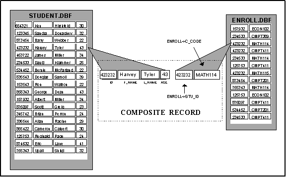
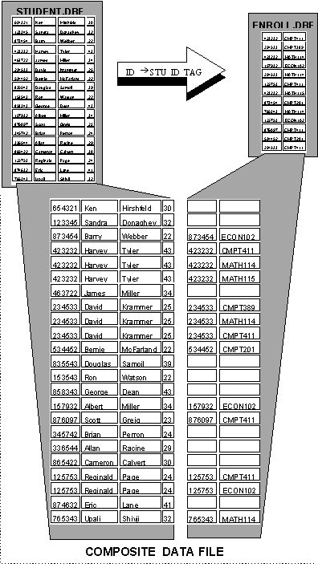
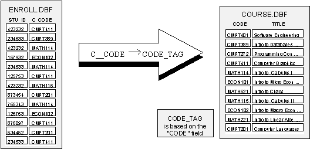
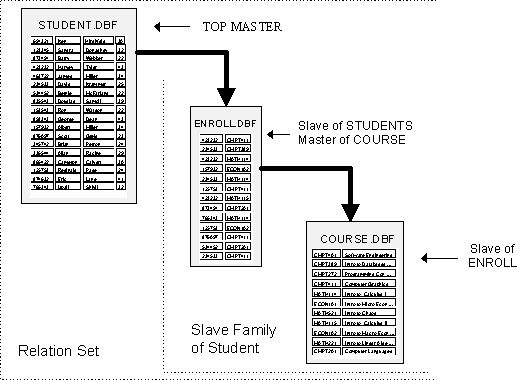
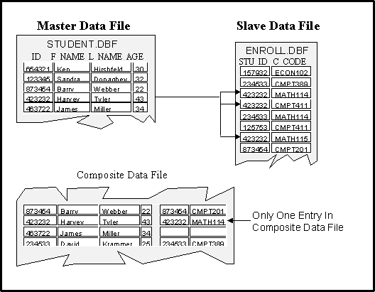
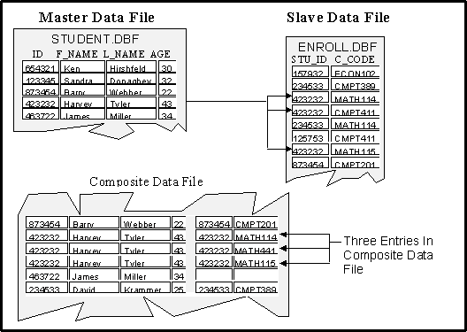
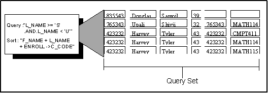

Queries And Relations
One of the most powerful features of CodeBase
is its relation and query capabilities. By using relations, you can turn
a collection of separate data files into a fully relational database.
Relations are used for two tasks: lookups and queries.
Lookups are used to automatically locate
records between related data files. Essentially, this makes several related
data files act like a single large data file.
Queries retrieve groupings of records from
the database that meet conditions that you can specify at run-time. Queries
use CodeBase's Query Optimization which greatly reduces the time it takes
to perform queries.
|
|
In its simplest form, a
relation is a connection between two data files that specifies how
the records from the first data file are used to locate one or more records
from the second. |
|
|
The data file which controls
the others is called the master. The controlled data files are
called slaves. A master can have any number of slaves which in turn can
be masters of other slaves. |
|
|
To create a relation, you
usually provide two pieces of information. The first is the master
expression, and the second is a tag based on the slave data
file called the slave tag.
The purpose of the master
expression is to generate an index key called the lookup key. The
master expression is evaluated for each record in the master data file
and the resulting value is that record's lookup key. A record in the slave
is then found by performing a seek using the lookup key on the slave tag.
The most common type of
master expressions are ones which only contain the name of a field from
the master data file. The slave tag ordering is usually based on an identical
field in the slave data file. Figure 5.1 shows a relation of this type.
|
|
|
In this example, the master
expression is "ID" and the slave tag is the tag STU_ID_TAG.
The index expression for the slave tag is "STU_ID". If, for
example, the current record for the master data file is set to record
number 4, the master expression would then evaluate to "423232".
The lookup on the slave data is then performed, locating record number
3. |
Composite Records |
Related records from the
master and slaves data files are collectively referred to as a composite
record. The composite record consists of the fields from the master
along with the fields from the slave data files. The following is a composite
record from the previous relation example: |

When using fields from the composite record
in a dBASE expression, you must precede any field names from slave data
files with the field name qualifier. The field name qualifier is the name
of the data file followed by the "->" characters. This avoids
any potential naming conflicts caused by data files with field names in
common.
For example, " ENROLL->STU_ID = 876987"
is a dBASE expression containing fields from the slave data file. This
expression could be used as part of a query (discussed later in this chapter).
Composite Data Files |
The composite data file
is the set of composite records that are produced by the relation.
Figure 5.3 lists the composite data file for the example relation. |
|
|
The composite data file
does not physically exist on disk. It is merely a way of viewing the information
in the data files of the relation. |

For example, when the relation is applied
to record number 3 of the master data file the following composite
record is generated:
|
|
By default, if the relation
does not find a match in the slave data file, the slave's fields in the
composite record are left as blanks. For example record number 1 in the
master data file does not have a corresponding slave record, so the generated
composite record is: |
|
|
Although having a relation
between two data files is quite useful, it is often necessary to set relations
between one master and several slaves, or to set relations between the
slaves and other data files. |
Single Master, Multiple Slave Relations |
Relations with one master
and several slaves are very similar to the single master, single slave
relations. In this case there is a master expression and slave tag for
each slave, and the composite record consists of fields from all the data
files. CodeBase permits any number of slaves for a single master. The
only limitations are the resources of your system. |
Multi-Layered Relations |
There are many situations
that require a master with a relation to a slave, which in turn has a
relation to other data files. CodeBase supports an unlimited number of
these multi-layered relations and will automatically perform lookups in
any associated slave data files. |
|
|
A master data file is a
master only in the context of a specific relation. The data file can also
be slave in a different relation. If the data file is not a slave in any
other relation, it is called a top master. |
|
|
A relation set consists of
a top master and all other connected relations. There must be exactly
one top master in a relation set. |
|
|
Figure 5.4 describes a
new relation between the ENROLL.DBF data file and the new data file COURSE.DBF.
It shows the entire relation set and points out the various relations
between the data files. |


|
|
There are three basic types
of relations. They are exact match, scan and approximate
match relations. The type of relation determines what record or records
are located during a lookup. |
Exact Match Relations |
An exact match relation
permits only a single match between the master and slave data files. Both
one to one and many to one relations are exact match relations. In a one
to one relation, there is only one record in the master that matches a
single record in the slave. In a many to one relation, there are one or
more records in the master that match a single slave record. |

If there are multiple slave records that
match a single master record, then a composite record is only generated
for the first slave record, as illustrated above. There are three records
in the slave data file that match record number 4 of the master. Since
this is an exact relation, a composite record is made from only the first
matching record of the slave data file.
Scan Relations |
In a scan relation,
if there are multiple slave records for a master record, there is one
composite record in the extended data file for each of the matching slave
records. Both one to many and many to many relations are scan relations.
In a one to many relation, each record in the master may have multiple
matching slave records. A many to many relation is the same as one to
many except that different master records may match the same slave record.
|

Approximate
Match Relations |
The final type of relation
is the approximate match relation. This is similar to the exact match
relation in that it permits only one match for a master record. The only
difference is the way it behaves when an exact match is not found in the
slave data file. If the match fails, the slave record whose index key
appears next in the slave tag is used instead. Approximate match relations
are generally quite rare and are usually used only when a range of records
are represented by a single high value. |
An approximate match relation is shown in
Figure 5.7. In this case, the employees' retirement benefits are determined
by the number of years that they put into the company. Instead of making
an entry for each possible year served, the BENEFIT.DBF only lists the
upper limit for each pay out level. The first pay out level is from
zero to five years, the second is six to ten, et cetera until the maximum
entry of twenty-one years and above pays out 100000.
|
|
Relations are created during
the execution of your application. Before you can create a relation, you
must have opened all the data files and any index files that are used
in the relation set. |
|
|
Program RELATE1.C sets
up a scan type relation between the STUDENT.DBF and ENROLL.DBF data files
that were illustrated in Figure 5.1. This program lists all of the records
in composite data file. |
/* RELATE1.C */
#include "D4ALL.h"
CODE4 codeBase;
DATA4 *student = NULL,*enrollment = NULL;
RELATE4 *master = NULL,*slave = NULL;
TAG4 *idTag,*nameTag;
void openDataFiles()
{
code4init(&codeBase);
student = d4open(&codeBase,"STUDENT");
enrollment = d4open(&codeBase,"ENROLL");
nameTag = d4tag(student,"NAME");
idTag = d4tag(enrollment,"STU_ID_TAG");
error4exitTest(&codeBase);
}
void setRelation()
{
master = relate4init(student);
if(master == NULL) exit(1);
slave = relate4createSlave(master,enrollment,"ID",idTag);
relate4type(slave,relate4scan);
relate4top(master);
}
void printRecord()
{
RELATE4 *relation;
DATA4 *data;
FIELD4 *field;
int j;
for(relation = master; relation != NULL;
relate4next(&relation))
{
data = relate4data(relation);
for(j = 1; j <= d4numFields(data);
j++)
printf("%s
",f4memoStr(d4fieldJ(data,j)));
}
printf("\n");
}
void listRecords( void )
{
int rc;
for(rc = relate4top(master); rc != r4eof;
rc = relate4skip(master,1L))
printRecord();
printf("\n");
code4unlock(&codeBase);
}
void main( void )
{
openDataFiles();
setRelation();
listRecords();
relate4free(master,0);
code4close(&codeBase);
code4initUndo(&codeBase);
}
The RELATE4 Structure
|
The RELATE4 structure
contains the control information about a single data file in a relation.
Every data file that is in the relation set must have its own RELATE4 structure.
A data file's RELATE4 structure
contains information such as what data file (if any) is the master of
this data file and what type of relation exists between the data file
and its master.
In a single relation set,
a data file can only have one RELATE4
structure associated with it. |
Specifying The Top Master |
The first step for creating
a relation entails specifying which data file will be the top master of
the relation set. This step is accomplished by a call to relate4init,
which creates and returns a pointer to the RELATE4 structure
for that data file. |
|
|
master = relate4init(student);
|
|
|
At this point, you have
a complete relation set consisting of one data file -- the top master.
Why would you want a relation set with just a single data file in it?
A single data file relation set may be used when a query involves only
the one data file. |
Adding Slave Data Files |
Adding slave data files
to a relation is accomplished by a call to relate4createSlave.
To do this, there are four pieces of information that you must specify.
|
|
|
First, the master data
file's RELATE4
structure must be provided. This can either be the RELATE4 pointer
returned from relate4init
or from a previous call to relate4createSlave. |
|
|
The second piece of information
is a pointer to the slave's DATA4
structure. |
|
|

|
A data file should only be used once in a relation set.
The result of using a data file more than once in a relation set is undefined
and unpredictable. |
|
|
|
|
|
|
|
The master expression is
the third piece of information needed when adding a slave. This
dBASE expression is evaluated using the current record of the master data
file to produce a lookup key. |
|
|
The final piece of information
is a TAG4 pointer to
one of the slave's tags. During a lookup, a search for the lookup key
(generated by the master expression) is made using this tag. |
|
|
After the slave has been
added to the relation set relate4createSlave
returns a pointer to the slave's RELATE4 structure.
You should save this pointer in a variable if you plan on changing the
default relation type or on adding slaves to the slave data file. |
|
|
slave = relate4createSlave(master, enrollment, "ID",
idTag);
|
|
|
In the above code fragment,
master is the RELATE4
pointer returned from the call to relate4init
and enrollment is the DATA4
pointer of the slave data file. The master expression is "ID".
As a result, the lookup key is the contents of the ID field from the master
data file. The lookups are performed using a tag from the slave data file.
This tag is identified by idTag. |
Creating Slaves Without Tags |
CodeBase allows an alternative
method of performing lookups that does not use tags from the slave data
file. Instead of having the master expression evaluate to a lookup key,
it evaluates to a record number. This record number specifies the physical
record number of the slave record retrieved from the slave data file.
To use this method, simply
pass null for the TAG4 parameter
of relate4createSlave.
This method is mainly useful on static unchanging slave data files that
are never packed. This method has the advantage of being faster and more
efficient than performing seeks on a tag. The following is a example of
this method. |
|
|
slave = relate4createSlave(master, enrollment, "RECNO()",
null);
|
|
|
Since the master expression
is "RECNO()", it returns the record number of master data file's
current record. As a result, record n in the master must match
record n in the slave. |
|
|
If the master expression
contains a reference to a non existent record number ( <= 0 or
> d4recCount
), CodeBase generates a -70 error ("Reading File", see "Appendix
A: Error Codes" in the Reference Guide). |
|
|
The default type of relation
is an exact match relation. You can change a relation's type by calling
relate4type.
This function takes a RELATE4
pointer and an integer specifying the type of the relation. The valid
integer values are specified by the following defined CodeBase constants:
·
relate4exact
(Default) This specifies an exact match relation.
·
relate4approx
This specifies an approximate match relation.
·
relate4scan
This specifies a scan relation.
Since the master data file
may have multiple slaves each using a different type of relation, it is
the slave's RELATE4
pointer that is passed to the relate4type
function. In RELATE1.C the RELATE4
pointer slave is passed to the relate4type
function. |
|
|
relate4type(slave, relate4scan);
|
Setting The Error Action |
Sometimes a record in the
slave data file cannot be located from a master data file record. This
occurs when you are using an exact type relation and there is no match
for the lookup key, or when the relation is using direct record lookup
and the generated record number does not exist in the slave data file.
Under either of these circumstances, there are several ways in which CodeBase
can react. relate4errorAction
specifies which method is used and it accepts a pointer
to the slave's RELATE4
structure and an integer that specifies the type error action. The valid
error action codes are as follows:
·
relate4blank
(Default) This means that when a slave record cannot be
located, it becomes a blank record.
·
relate4skipRec
This code means that the entire composite record is skipped as if
it did not exist.
·
relate4terminate
This means that a CodeBase error is generated and the CodeBase
relate function, usually relate4skip,
returns an error code. |
|
|
CodeBase provides three
functions for moving through the records in the composite data
file. They are relate4top,
relate4bottom
and relate4skip.
These functions are used mainly for obtaining composite records when a
query is performed. |
Listing The Composite Data File |
When used together, these
three functions allow you iterate through all of the composite data file.
The following code segment demonstrates this process: |
|
|
void listRecords( void )
{
int rc;
for(rc = relate4top(master); rc != r4eof;
rc = relate4skip(master, 1L) )
printRecord( ) ;
printf("\n");
} |
|
|
relate4top
sets the current record of the master data file to the first record
in the composite data file. If there are slaves in the masters slave family,
lookups are automatically performed. If there are no composite records
in the composite data file, r4eof
is returned. |
|
|
For each iteration of the
for loop, relate4skip
is used to move to the next record in the composite data file. Just
as in the d4skip
function, relate4skip's
second parameter specifies the number of records to be skipped. When there
are no more records in the composite data file, r4eof
is returned. |
|
|
 Note Note
|
Before relate4skip
is used, a call to relate4top
or relate4bottom
must be made. |
|
|
|
|
|
|
|
Skipping backwards through
the composite data file is also permitted. Since skipping backwards
requires extra internal overhead, you must either call relate4bottom
or relate4skipEnable
to initialize the backwards skipping abilities. |
|
|
An example of this is given
in the following code segment: |
|
|
void listRecords( void )
{
int rc;
for(rc = relate4bottom(master); rc !=
bof;
rc = relate4skip(master, -1L))
printRecord();
} |
|
|
Once a relation has been
set up, you can then perform queries upon the composite data file. A query
allows you to retrieve selected records from the composite data file
by specifying a query expression. Essentially the query specifies a subset
of the composite data file, which is called the query set, by filtering
out any composite records that do not meet the search criterion.
In addition to performing
queries, you can also specify the order in which the composite records
are presented.
When a query is specified,
CodeBase uses its Query Optimization, whenever possible, to minimize the
number of necessary disk accesses. This greatly improves performance when
retrieving composite records from the query set. |
|
|
Program RELATE2.C demonstrates
how queries can be performed on a single data file. |
/* RELATE2.C */
#include "D4ALL.h"
CODE4 codeBase;
DATA4 *student = NULL;
void openDataFiles()
{
student = d4open(&codeBase,"STUDENT");
error4exitTest(&codeBase);
}
void printRecord(DATA4 *dataFile)
{
int j;
for(j=1;j<=d4numFields(dataFile);j++)
printf("%s ",f4memoStr(d4fieldJ(dataFile,j)));
printf("\n");
}
void query(DATA4 *dataFile,char *expr,char *order)
{
RELATE4 *relation = NULL;
int rc;
relation = relate4init(dataFile);
if(relation == NULL) exit(1);
relate4querySet(relation,expr);
relate4sortSet(relation,order);
for(rc = relate4top(relation);rc != r4eof;rc
= relate4skip(relation,1L))
printRecord(dataFile);
printf("\n");
code4unlock(&codeBase);
relate4free(relation,0);
}
void main( void )
{
int rc,numFields,j;
code4init(&codeBase);
openDataFiles();
query(student,"AGE > 30","");
query(student,"UPPER(L_NAME) = 'MILLER'","L_NAME
+ F_NAME");
code4close(&codeBase);
code4initUndo(&codeBase);
}
The Query Expression |
To generate a query, all you need to
provide is a dBASE expression, called the query expression, which
evaluates to a Logical value. This expression is used to determine whether
a composite record should be included in the query. If the query
expression evaluates to .TRUE. then the record is kept, otherwise it is
discarded from the query. |
|
|
The query expression is
specified for a relation set by the relate4querySet
function. This function takes a pointer to the top master's RELATE4
structure and specifies the query expression for the entire relation set.
The query expression can
reference fields from different files in the relation set. When a query
is made, the default data base used is the master. This means that the
field will automatically be associated with the master data base. To refer
fields of different data files use the file's alias followed by an arrow
(->) and the field name.
For example, suppose a relation consists
of a master data file called FATHER.DBF and a slave data file called SON.DBF.
Assume that each file has a field called NAME.
For these data files, the
following queries are equivalent: |
|
|
relate4querySet( relation, "FATHER->NAME =
'Ben Nyland'") ;
relate4querySet( relation, "NAME = 'Ben Nyland'")
;
|
|
|
These queries compare a field called
NAME in FATHER.DBF with the string "Ben Nyland". The file name
FATHER does not need to be specified in the query because the FATHER.DBF
file is a master.
In order to check for the
composite record that has Ben Nyland and his son Eric Nyland, the query
can be specified by either of the following: |
relate4querySet( relation, "FATHER->NAME =
'Ben Nyland'.AND. SON->NAME = 'Eric Nyland'");
relate4querySet( relation, "NAME = 'Ben Nyland'
.AND. SON->NAME = 'Eric Nyland'");
|
|
The query expression can
be changed at any time, although relate4top
or relate4bottom
must then be called before relate4skip
can be called. |
The Sort Expression |
The sort expression
of a relation is very similar to an index expression. They are
both dBASE expressions, and are both used to determine the sort ordering.
The difference is that
the sort expression determines the sort order of the query set and you
are allowed to use fields from any data file in the relation set. |
|
|
The sort expression is
specified for a relation set by relate4sortSet.
This function takes a pointer to the top master's RELATE4 structure
and specifies the sort ordering for the entire query set. |
|
|
The sort expression can
contain field names from any data file in the relation set. It is required
that any fields, except those from the top master, are qualified by the
data file's alias. |
|
|
relate4sortSet( relation, "L_NAME + F_NAME + CLASSES->C_CODE");
|
|
|
Like the query expression,
the sort expression can be changed at any time, although relate4top
or relate4bottom
must then be called before relate4skip
can be called. |
Performing Queries on Relation Sets |
Queries can be performed
on relation sets of any size, including those consisting of a single data
file. The following figures illustrate two queries. They are on the composite
data file shown in Figure 5.3. |

|
|
The query set is accessed
by relate4top
, relate4bottom
and relate4skip.
When a query has been specified, these three functions then access a query
set instead of the entire composite data file. |
Generating The Query Set |
The query set is initially
formed by the first call to either relate4top
or relate4bottom.
These functions analyze the query expression for the most efficient way
of performing the query. They then locate all of records that are in the
query set. If a sort expression has been specified, the composite records
are sorted. And finally, lookups are performed on the data files in the
relation to locate the first or last composite record in the query set.
|
|
|
|
When complex relations and sort expressions are used
on a relation set consisting of large data files, relate4top and relate4bottom can take considerable
time to execute. |
|
|
|
|
|
|
|
As long as the query and
sort expressions are not changed, further calls to relate4top
and relate4bottom
do not cause the query set to be regenerated. |
Regenerating the Query Set |
You can force CodeBase
to completely regenerate the query set by calling relate4changed.
This forces CodeBase to discard any buffered information and regenerate
the query set based on the current state of the relation set's data files.
After relate4changed
is called, relate4top
or relate4bottom
must be called before any further calls to relate4skip
may be made. |
|
|
The steps involved in performing
queries on multi-layered relation sets are the same as on a relation set
containing a single data file. You create your relations, set the types
of the relations, specify query and sort expressions and retrieve the
composite records from the query set. |
|
|
Program RELATE3.C creates
a multi-layered relation between the STUDENT, ENROLL and CLASSES data
files and then performs queries on it. |
/* RELATE3.C */
#include "D4ALL.H"
CODE4 codeBase;
DATA4 *student,*enrollment,*classes;
FIELD4 *studentId,*firstName,*lastName,*age,*classCode,*classTitle;
TAG4 *codeTag,*idTag;
RELATE4 *classRel,*studentRel,*enrollRel;
void openDataFiles()
{
code4init(&codeBase);
student = d4open(&codeBase,"STUDENT");
enrollment = d4open(&codeBase,"ENROLL");
classes = d4open(&codeBase,"CLASSES");
studentId = d4field(student,"ID");
firstName = d4field(student,"F_NAME");
lastName = d4field(student,"L_NAME");
age = d4field(student,"AGE");
classCode = d4field(classes,"CODE");
classTitle = d4field(classes,"TITLE");
idTag = d4tag(student,"ID_TAG");
codeTag = d4tag(enrollment,"C_CODE_TAG");
error4exitTest(&codeBase);
}
void printStudents()
{
printf("\n
%s ",f4str(firstName));
printf("%s ",f4str(lastName));
printf("%s ",f4str(studentId));
printf("%s ",f4str(age));
}
void setRelation( void )
{
classRel = relate4init(classes);
enrollRel = relate4createSlave(classRel,enrollment,"CODE",codeTag);
studentRel = relate4createSlave(enrollRel,student,"STU_ID",idTag);
}
void printStudentList(char *expr,long direction)
{
int rc,endValue;
relate4querySet(classRel,expr);
relate4sortSet(classRel,"STUDENT->L_NAME
+ STUDENT->F_NAME");
relate4type(enrollRel,relate4scan);
if(direction > 0)
{
rc = relate4top(classRel);
endValue = r4eof;
}
else
{
rc = relate4bottom(classRel);
endValue = r4bof;
}
printf("\n%s",f4str(classCode));
printf(" %s\n",f4str(classTitle));
for(;rc != endValue;rc = relate4skip(classRel,direction))
printStudents();
}
void main( void )
{
openDataFiles();
setRelation();
printStudentList("CODE = 'MATH114
'",1L);
printStudentList("CODE = 'CMPT411
'",-1L);
relate4free(classRel,0);
code4close(&codeBase);
code4initUndo(&codeBase);
}
|
|
The method illustrated above for retrieving
composite records from the composite data file is well suited for performing
queries and generating reports, but has unnecessary overhead if all you
want to do is perform lookups to slave data files. As a result CodeBase
provides an alternative method for performing lookups that is independent
of the query set and sort orderings. |
|
|
Program RELATE4.C sets up an exact match
type relation between the STUDENT.DBF and ENROLL.DBF that were illustrated
in Figure 5.1. This program performs some seeks and lookups. |
/* RELATE4.C */
#include "D4ALL.h"
#ifdef __TURBOC__
extern unsigned _stklen = 10000;
#endif
CODE4 codeBase;
DATA4 *student = NULL,*enrolment = NULL;
FIELD4 *id,*fName,*lName,*age,*cCode;
RELATE4 *master = NULL,*slave = NULL; TAG4 *idTag,*nameTag;
void openDataFiles()
{
coder4init(&codeBase);
student = d4open(&codeBase,"STUDENT");
enrolment = d4open(&codeBase,"ENROLL");
id = d4field(student,"ID");
fName = d4field(student,"F_NAME");
lName = d4field(student,"L_NAME");
age = d4field(student,"AGE");
cCode = d4field(enrolment,"C_CODE");
nameTag = d4tag(student,"NAME");
idTag = d4tag(enrolment,"STU_ID_TAG");
error4exitTest(&codeBase);
}
void setRelation()
{
master = relate4init(student);
slave = relate4createSlave(master,enrolment,"ID",idTag);
}
void seek(DATA4 *dataFile,TAG4 *tag,RELATE4 *relation,char
*key)
{
TAG4 *oldTag;
oldTag = d4tagSelected(dataFile);
d4tagSelect(dataFile,tag);
d4seek(dataFile,key);
relate4doAll(relation);
d4tagSelect(dataFile,oldTag);
}
void printRecord()
{
printf("%15s ",f4str(fName));
printf("%15s ",f4str(lName));
printf("%6s ",f4str(id));
printf("%2s ",f4str(age));
printf("%7s\n",f4str(cCode));
}
void main( void )
{
openDataFiles();
setRelation();
seek(student,nameTag,master,"Tyler
Harvey ");
printRecord();
seek(student,nameTag,master,"Miller
Albert ");
printRecord();
code4unlock(&codeBase);
relate4free(master,0);
code4close(&codeBase);
code4initUndo(&codeBase);
}
Performing A Lookup |
Performing lookups is quite
simple. First you locate the record in the master data file that you wish
to perform the lookup from, using the normal d4top, d4bottom,
d4go,
d4seek,
d4seekDouble, d4seekN, d4seekNext, d4seekNextDouble, d4seekNextN
and d4skip
functions. The lookup is then accomplished by a call to relate4doAll.
This function is passed a RELATE4
pointer of a master data file and it performs lookups on the slave data
files of that master. In addition, it travels down the relation set performing
lookups on the slave's slaves.
The following function
performs a seek on a data file and then performs the lookups on it's slaves.
|
|
|
void seek( DATA4 *dataFile, TAG4 *tag, RELATE4
*relation,
char *key)
{
TAG4 *oldTag;
oldTag = d4tagSelect( dataFile ) ;
d4tagSelect( dataFile, tag ) ;
d4seek( dataFile,key ) ;
relate4doAll( relation ) ;
d4tagSelect( dataFile, oldTag ) ;
} |
|
|
A similar function to relate4doAll is
relate4doOne.
This function accepts the RELATE4
pointer to a slave and performs a lookup on that slave. |
|
|
Note |
Any query and sort expressions are ignored by functions
relate4doAll
and relate4doOne.
Consequently, these functions provide somewhat independent functionality.
Using them in conjunction with relate functions such as relate4top, relate4bottom, and
relate4skip
is not particularly useful. |
|
|
|
|
|
|
|
As an aid in writing generic
reusable code, CodeBase provides the function relate4next,
which allows you to iterate through the relations in a relation set.
This function takes the
address of a RELATE4
pointer and changes it to a pointer to the next RELATE4 structure
in the relation set. |
|
|
|
The relate4next
function changes the value of the pointer that is passed in as a parameter.
Consequently, you should make a copy of this pointer if you need it later. |
|
|
|
|
|
|
|
The following code segment
displays all of the records from all of the relations in the relation
set. |
|
|
void printRecord()
{
RELATE4 *relation;
DATA4 *data;
FIELD4 *field;
int j;
for(relation = master; relation != NULL;
relate4next(&relation))
{
data = relation->data;
for(j = 1; j <= d4numFields(data);
j++)
printf("%s
",f4memoStr(d4fieldJ(data,j)));
}
printf("\n");
}
|